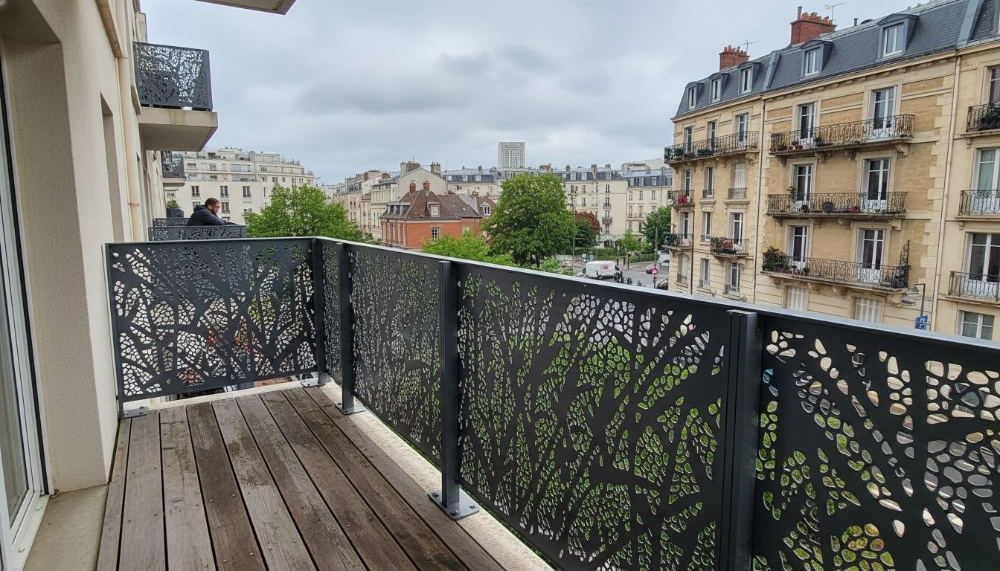
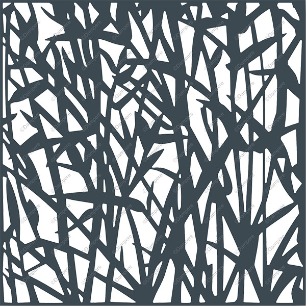
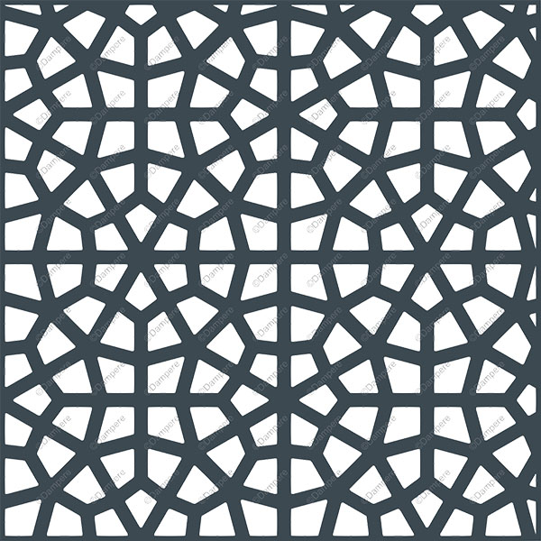
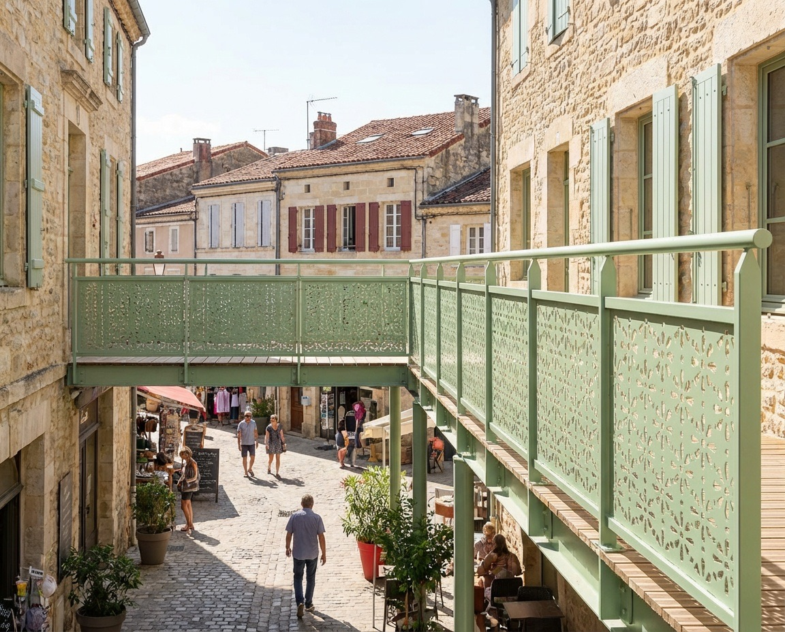
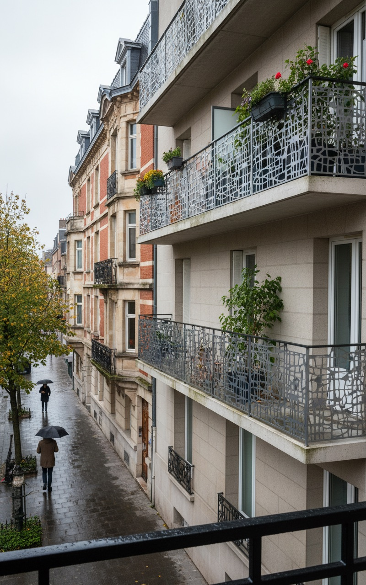
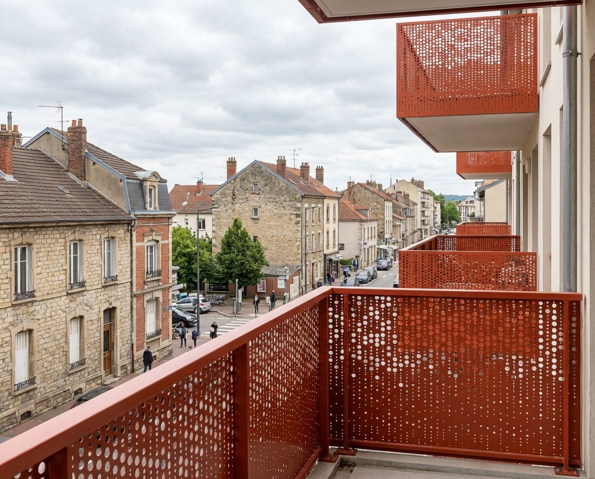
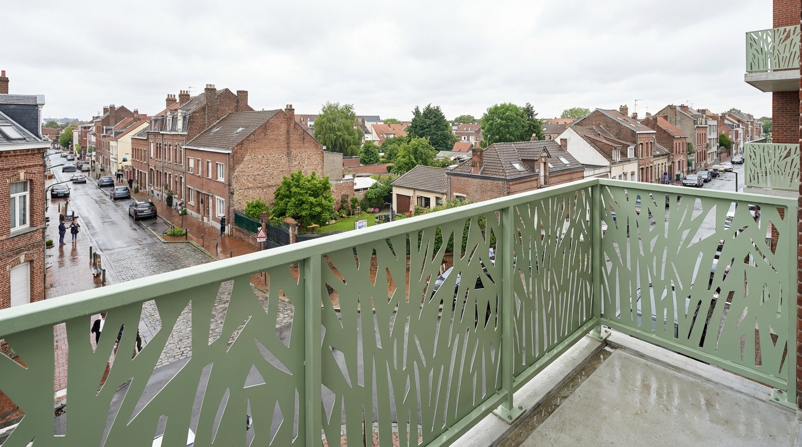

Atlantide
Résidentiel & tertiaire
Des kits garde-corps sur mesure, prêts à poser, et des conditions dédiées aux professionnels qui travaillent régulièrement avec Primo Gardex.
Vous le configurez en ligne, nous le fabriquons en usine et le livrons prêt à poser — pour vos projets résidentiels, collectifs et ERP.

Des conditions concrètes pour travailler plus simplement avec Primo Gardex.
Appliquée automatiquement sur vos commandes.
Une base tarifaire stable pendant la validation du projet.
Des réponses plus rapides sur vos configurations et vos délais.
Chiffrage, options et mise en production simplifiés.
Un support papier à votre enseigne pour vos rendez-vous client.
Des remplissages décoratifs qualitatifs dans un cadre économique maîtrisé.
Faites tourner le modèle et essayez les motifs de remplissage. Vos dimensions se règlent ensuite dans le configurateur.
Quelques remplissages parmi notre bibliothèque — d'autres motifs sont disponibles sur demande et dans le configurateur.


Motifs identiques au configurateur 3D. Contexte de sécurité éventuel selon l'ajourage [à valider].
Une fois le projet validé, comptez environ 3 semaines de production.
Vous renseignez longueur, hauteur, pose, remplissage et teinte RAL.
Le projet est vérifié et validé avant lancement en fabrication.
Fabrication sur mesure en usine, après validation.
Livraison du kit prêt à poser : vous démarrez la pose.

Prêt à poser sur votre chantierDélai indicatif, selon la configuration et la charge de production.

Le Cercle Partenaire n'est pas qu'une remise : c'est un cadre pour construire une collaboration régulière avec les professionnels du garde-corps.
Résidentiel, collectif, coursives, ERP et bâtiments publics : des projets où sécurité, conformité et sur-mesure font la différence.

Coloris RAL
Coloris RALUn statut valable 1 an, reconductible avec 3 commandes sur l'année.
Deux façons d'activer votre statut partenaire :
Vos conditions s'appliquent sur tous vos projets, au rythme de vos chantiers.
3 commandes sur l'année suffisent à prolonger vos avantages pour 12 mois.
Activez votre accès et profitez de vos conditions dédiées.
Mon compte Primo Gardex → Statut partenaire · activation par mail ou via le chatbot